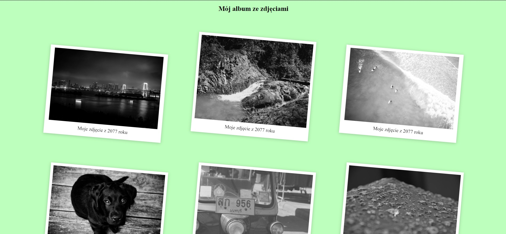
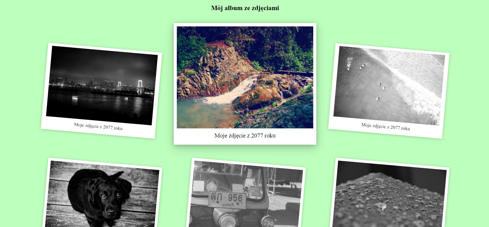

Sugerowane style:
- kolor tła: #bdffbd
- Filtr na zdjęciu skala szarości 100%
- transformacja elementu: skalowanie 80%, obrót 5o czas zmian 0.35s
- Po najechaniu myszą na zdjęcie: zdjęcie filtra, transformacja: skalowanie 1, obrót 0
- zdjęcia ze strony lorem picsum lub pixabay
- przydatne polecenia CSS:
Screeny

rys.1 Wygląd strony

rys.2 Zmiana transformacji zdjecia po najechaniu myszą